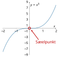

8.3 Extremwerte#
Neben der Linearisierung einer mehrdimensionalen Funktion ist auch die Berechnung von Minima (Tiefpunkten) und Maxima (Hochpunkten) interessant für die Praxis. Extremwerte können bei skalarwertigen Funktionen beliebig vieler Variablen auftreten, aber wir beschränken uns in diesem Kapitel auf Funktionen von zwei unabhängigen Variablen.
Lernziele#
Lernziele
Sie wissen, dass drei Bedingungen überprüft werden müssen, um zu entscheiden, ob die Funktion \(f:\mathbb{R}^2\to\mathbb{R}\) Extremwerte hat.
Ein Punkt \((x_0,y_0)\) ist ein Kandidat für eine Extremstelle, wenn die folgende erste Bedingung erfüllt ist:
Damit der Kandidat \((x_0,y_0)\) auch wirklich ein Extremwert ist, muss zusätzlich die Determinante der Hesse-Matrix positiv sein, also:
Zuletzt entscheidet dann das Vorzeichen von dem Term \(\frac{\partial^2 f(x_0,y_0)}{\partial x \partial x}\) darüber, ob ein Minimum oder ein Maximum vorliegt:
\begin{align*} \frac{\partial^2 f(x_0, y_0)}{\partial x \partial x} < 0 & \qquad \Rightarrow \text{relatives Maximum} \ \frac{\partial^2 f(x_0, y_0)}{\partial x \partial x} > 0 & \qquad \Rightarrow \text{relatives Minimum} \ \end{align*}
Extremwerte bei eindimensionalen Funktionen#
Betrachten wir zunächst eine eindimensionale Funktion \(f:\mathbb{R}\to\mathbb{R}\). Um herauszufinden, welche x-Werte als Extrema (Maximum/Hochpunkt oder Minimum/Tiefpunkt) möglich sind, wird die 1. Ableitung Null gesetzt:
Diese Bedingung ist notwendig, damit überhaupt ein Maximum oder Minimum vorliegen kann. Leider reicht diese Bedingung noch nicht aus. Alle Nullstellen der 1. Ableitung sind mögliche Extrema, es könnten aber auch Sattelpunkte sein wie in der folgenden Abbildung der Funktion \(f(x)=x^3\):
{kind=link}

Fig. 15 Sattelpunkt#
Daher müssen wir noch zusätzliche Bedingungen überprüfen, bevor wir entscheiden können, ob ein Minimum oder Maximum vorliegt. Die möglichen Extremwerte müssen noch zusätzlich mit der 2. Ableitung geprüft werden:
Der Punkt \(x_0\) ist ein Maximum/Hochpunkt, wenn
die 1. Ableitung Null ist, d.h. \(f'(x_0) = 0\) und
die 2. Ableitung negativ ist, d.h. \(f''(x_0) < 0\).
Der Punkt \(x_0\) ist ein Minimum/Tiefpunkt, wenn
die 1. Ableitung Null ist, d.h. \(f'(x_0) = 0\) und
die 2. Ableitung positiv ist, d.h. \(f''(x_0) > 0\).
Diese beiden Bedingungen nennt man dann hinreichende Bedingungen.
Achtung: Wenn allerdings die zweite Ableitung Null ist, also \(f''(x_0) = 0\), kann man keine Entscheidung treffen und muss weitere Bedingungen überprüfen.
Dieses Prozedere übertragen wir jetzt auf Funktionen von zwei Variablen.
Extremwerte bei mehrdimensionalen Funktionen#
Die notwendige Bedingung für Extremwerte eindimensionaler Funktion lässt sich sofort auf mehrdimensionale Funktionen übertragen. Wir müssen uns nur in Erinnerung rufen, dass die 1. Ableitung eindimensionaler Funktionen dem Gradienten entspricht. Und da der Gradient der Zeilenvektor ist, der alle partielle Ableitungen zusammenfasst, lautet die notwendige Bedingung für einen Extremwert der skalarwertigen Funktion \(f\)
Diese Gleichung können wir auch vektoriell schreiben:
Der Gradient der Funktion muss der Nullvektor sein, so wie die 1. Ableitung Null sein muss.
Das folgende Video erläutert nochmal die notwendige Bedingung, der Dozent zeigt jedoch gleich die Bedingung für eine Funktion, die von beliebig vielen Variablen abhängt. Das ist eine Verallgemeinerung von der oben vorgestellten Bedingung.
Video zu “Notwendige Bedingung für Extremwerte” von Mathematische Methoden
Im folgenden Video werden mehrere Beispiele vorgerechnet.
Video zu “Beispiele notwendige Bedingung” von Mathematische Methoden
Wenn die notwendige Bedingung erfüllt ist, also die partiellen Ableitungen 1. Ordnung Null sind, dann reicht das noch nicht aus. Zusätzlich muss noch die folgende hinreichende Bedingung gelten: Die Determinante der Hesse-Matrix ist positiv.
Ist die Determinante der Hesse-Matrix 0 oder negativ, so ist unbestimmt, ob ein Extremwert vorliegt.
Sobald durch die zweite Bedingung geklärt ist, dass tatsächlich ein Extremwert vorliegt, muss noch berechnet werden, ob ein Maximum (Hochpunkt) oder ein Minimum (Tiefpunkt) vorliegt. Dazu muss das Vorzeichen der reinen 2. partiellen Ableitung nach \(x\) überprüft werden, also das Vorzeichen von \(\frac{\partial^2 f(x_0,y_0)}{\partial x\partial x}\). Es gilt:
\begin{align*} \frac{\partial^2 f(x_0,y_0)}{\partial x\partial x} < 0 & \qquad \Rightarrow \text{Maximum (Hochpunkt)} \ \frac{\partial^2 f(x_0,y_0)}{\partial x\partial x} > 0 & \qquad \Rightarrow \text{Minimum (Tiefpunkt)} \ \end{align*}
Das folgende Video zeigt erneut die hinreichende Bedingung etwas allgemeiner als unsere obigen Betrachtungen.
Video zu “Hinreichende Bedingung für Extremwerte” von Mathematische Methoden
Da die Bestimmung von Extremwerten ein schwieriges, aber sehr wichtiges Thema ist, folgen noch weitere Videos der Universität Köln, in denen Beispiel vorgerechnet werden.
Video zu “Beispiel 1a Extremwerte” von Mathematische Methoden
Video zu “Beispiel 1b Extremwerte” von Mathematische Methoden
Video zu “Beispiel 1c Extremwerte” von Mathematische Methoden
Video zu “Beispiel 2 Extremwerte” von Mathematische Methoden
Kochrezept zur Bestimmung der Extrema mehrdimensionaler Funktionen#
Falls die Extremstellen einer Funktion \(f\) gesucht sind, können Sie folgendermaßen vorgehen:
Berechnen Sie die partiellen Ableitungen der Funktion.
Setzen Sie aus den partiellen Ableitungen den Gradienten zusammen.
Lösen Sie die Gleichung \(\nabla f(x,y) = (0,0)\). Oder anders ausgedrückt, setzen sie alle partiellen Ableitungen gleich Null und bestimmen Sie die Nullstellen.
Untersuchen Sie für jeden Punkt aus Schritt 3 die Hessematrix:
Berechnen Sie die Hesse-Matrix für diesen Punkt.
Berechnen Sie die Determinante der Hesse-Matrix für diesen Punkt und prüfen Sie, ob sie positiv ist.
Wenn die Determinante positiv ist, dann berechnen Sie das Vorzeichen von
\[\frac{\partial^2 f(x_0,y_0)}{\partial x\partial x}.\]Entscheiden Sie dann anhand des Vorzeichens, ob ein Minimum (Tiefpunkt) oder ein Maximum (Hochpunkt) vorliegt.
Ausführliches Beispiel#
Als Beispiel betrachten wir die Funktion
Als erstes berechnen wir die partiellen Ableitungen nach \(x\) und \(y\):
\begin{align*} \frac{\partial f(x,y)}{\partial x} &= \frac{-2x}{(1 + x^2 + y^2)^2} \ \frac{\partial f(x,y)}{\partial y} &= \frac{-2y}{(1 + x^2 + y^2)^2} \ \end{align*}
Der Gradient der Funktion \(f\) lautet also
Jetzt werden der Gradient bzw. die partiellen Ableitungen Null gesetzt und wir erhalten die beiden folgenden Gleichungen:
\begin{align*} \frac{-2x}{(1 + x^2 + y^2)^2} &= 0 \ \frac{-2y}{(1 + x^2 + y^2)^2} &= 0 \ \end{align*}
Wir multiplizieren bei jeder Gleichung mit dem Nenner \((1 + x^2 + y^2)^2\) und erhalten direkt die Nullstelle der 1. Gleichung \(x = 0\) und die Nullstelle der 2. Gleichung \(y = 0\). Damit kommt nur ein einziger Kandidat als Extremstelle infrage nämlich
Nun wird die Hesse-Matrix berechnet. Dazu werden die 2. partiellen Ableitungen gebildet:
\begin{align*} \frac{\partial^2 f(x,y)}{\partial x \partial x} &= \frac{6x^2 - 2(y^2+1)}{(1 + x^2 + y^2)^3} \ \frac{\partial^2 f(x,y)}{\partial y \partial x} &= \frac{8xy}{(1 + x^2 + y^2)^3} \ \frac{\partial^2 f(x,y)}{\partial x \partial y} &= \frac{8xy}{(1 + x^2 + y^2)^3} \ \frac{\partial^2 f(x,y)}{\partial y \partial y} &= -\frac{2(x^2 - 3y^2 +1)}{(x^2 + y^2 + 1)^3} \ \end{align*}
Damit lautet die Hesse-Matrix:
Nun werden alle Kandidaten nacheinander in die Hesse-Matrix eingesetzt. Da wir aber nur einen einzigen Kandidaten haben, setzen wir jetzt den Punkt \((0,0)\) ein und erhalten
Davon berechnen wir die Determinante und testen, ob sie positiv ist:
Damit ist der Punkt \((0,0)\) eine Extremstelle. Jetzt bleibt nur noch die Überprüfung, ob ein Minimum oder ein Maximum vorliegt. Das Vorzeichen von
an der Stelle \((0,0)\) ist negativ, da
Damit hat die Funktion \(f\) an der Stelle \((0,0)\) ein Maximum (Hochpunkt).
Das folgende Video zeigt ein weiteres Beispiel.
Video zu “Extremwerte mehrdimensionaler Funktionen” von Mathematrick
Zusammenfassung und Ausblick#
Nachdem wir nun in diesem Kapitle gelernt haben, wie Extremwerte von mehrdimensionalen Funktionen bestimmt werden, nehmen wir im nächsten Kapitel noch Nebenbedingungen hinzu.